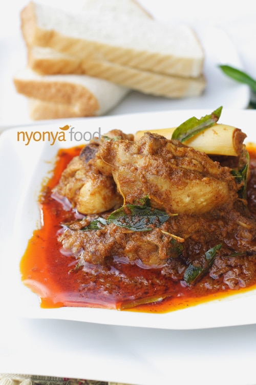

back to main page
Curry Chicken

a delicious meal from my home town
INGREDIENTS
- 1 whole chicken, remove head, neck, feet and chopped into pieces
- 200 g (7 oz.) potatoes, peeled and cut into wedges
- 200 ml thick coconut milk, to taste, optional
- 1 sprig curry leaves, use only the leaves
- 1 star arise
- 1 cloves
- 1 stick cinnamon
- 5 tbsp oil
- 1 ½ cup water
SPICE PASTE (GROUND)
- 3 cloves garlic
- 18 shallots
- 12 dried chili, soaked and remove seeds
- 15 g (0.5 oz.) turmeric
- 15 g (0.5 oz.) coriander seeds
- 1 teaspoon fennel
- 1 teaspoon cumin
- 20 g (1 oz.) shrimp paste, toasted
- 1 stick lemongrass, white part only
SEASONING
- 1 tablespoon salt
- 1 teaspoon sugar
INSTRUCTIONS
- Heat up your wok, pour in 5 tbsp oil, sauté cinnamon stick, star anise and cloves, fry over low heat, add in spice paste and stir-fry until fragrant.
- Add chicken, potatoes, curry leaves and fry well. Add in water, cover the pot, braise over low heat until chicken and potatoes are cooked well.
- Add the thick coconut milk, salt and sugar. Continue to simmer in low heat for 20-30 minutes or until the chicken becomes tender. Remove and serve with white rice, bread, nasi kunyit, or roti jala.